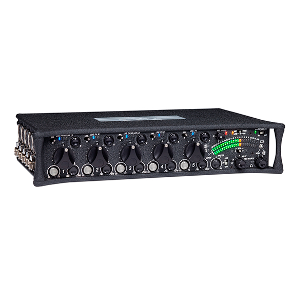

en
/
es
Nosotros
Broadcast
Producción y Streaming
Magnum Shop
Centro de Servicio
Acondicionamiento Acústico
Instalaciones
Magnum Live
Contacto
552
Broadcast / Sound Devices
Mezclador de producción portátil de cinco canales con grabadora incorporada.
Cinco entradas de micrófonos de alto rendimiento con dos etapas de ganancia,limitadores, filtros paso-alto y función de SOLO para el monitoreo
Cada entrada ofrece una salida directa pre o post fader
Varias salidas balanceadas – conexiones XLR, Hirose 10-pin y TA3
Salidas AES/EBU – dos conexiones para cuatro canales de audio digitales
Grabador digital, fácil de operar y graba a tarjetas SD o SDHC
Graba audio sin compresión en formato Broadcast WAV hasta 96kHz o en MP3
Acepta Timecode para estampar en la grabación de audio
Los medidores de audio ofrecen diferentes modos de operación incluyendo modo zoom para mezclar cerca de 0dBfs con más precisión
Programación del menú del 552 es sencilla a través de los comandos de voz presente en la salida de auriculares
Diseño ligero y duradero utilizando tapas moldeadas de fibra de carbónmetalizadas
Los controles del panel frontal están protegidos con arandelas de goma para mayor protección contra la intemperie
Puede operar con cuatro pilas AA o energía externa entre 10-18VDC
Contactar
